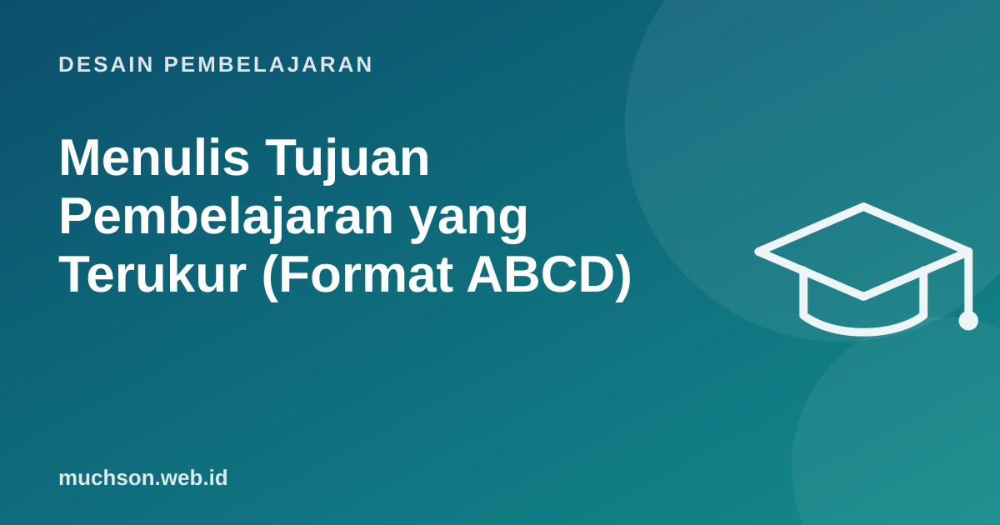

Beranda › Artikel › Desain Pembelajaran
Desain PembelajaranMenulis Tujuan Pembelajaran yang Terukur (Format ABCD)
"Peserta memahami pemrograman Python." Kalimat ini sering muncul di silabus, tetapi bagaimana kita tahu peserta sudah memahami? Tujuan pembelajaran yang baik menjawab pertanyaan itu sejak awal, sehingga materi, aktivitas, dan penilaian bisa dirancang mengarah ke hal yang sama.

Masalah dengan kata "memahami"
Kata seperti memahami, mengetahui, menghayati, mengenal menggambarkan proses di dalam kepala yang tidak bisa diamati. Tujuan yang terukur memakai kata kerja yang terlihat hasilnya: menulis, menghitung, membandingkan, memperbaiki, merancang.
| Kabur | Terukur |
|---|---|
| Memahami perulangan | Menulis perulangan for untuk menjumlahkan isi list |
| Mengetahui prinsip UX | Mengidentifikasi 3 pelanggaran heuristik pada sebuah layar aplikasi |
| Mengerti retensi pelanggan | Menghitung churn rate bulanan dari data pelanggan yang diberikan |
| Menghayati Green IT | Memperkirakan emisi tahunan perangkat kantor memakai kalkulator yang disediakan |
Format ABCD
A: Agen customer service baru
B: menulis balasan untuk keluhan pelanggan
C: berdasarkan simulasi chat dan panduan nada perusahaan
D: yang mendapat skor minimal 4 dari 5 pada rubrik empati dan kejelasan
→ "Diberikan simulasi chat keluhan dan panduan nada perusahaan, agen customer
service baru mampu menulis balasan yang mendapat skor minimal 4 dari 5
pada rubrik empati dan kejelasan."Pilih kata kerja sesuai tingkat berpikir
Taksonomi Bloom revisi (Anderson dan Krathwohl, 2001) membantu memilih kata kerja sesuai tingkat kognitif yang ingin dicapai.
Tujuan pelatihan kerja sebaiknya didominasi tingkat menerapkan ke atas. Bila semua tujuan berbunyi "menyebutkan" dan "mendefinisikan", peserta mungkin lulus kuis tetapi tetap tidak bisa bekerja.
Generator tujuan pembelajaran
Menyelaraskan tujuan, aktivitas, dan penilaian
John Biggs menyebut prinsip ini constructive alignment: tujuan, aktivitas belajar, dan penilaian harus saling cocok. Bila tujuannya "menulis balasan keluhan", aktivitasnya harus berlatih menulis balasan, dan penilaiannya menilai balasan yang ditulis, bukan kuis pilihan ganda tentang teori komunikasi.
Tanya jawab
Apakah setiap tujuan wajib memuat keempat unsur ABCD?
Berapa jumlah tujuan per sesi yang ideal?
Apa beda tujuan pembelajaran dan capaian pembelajaran?
Sumber dan bacaan lanjut
- Krathwohl (2002): A Revision of Bloom's Taxonomy, Theory Into Practice
- Biggs (1996): Enhancing teaching through constructive alignment, Higher Education
- Merancang kurikulum pelatihan ADDIE dan Bloom (artikel terkait)